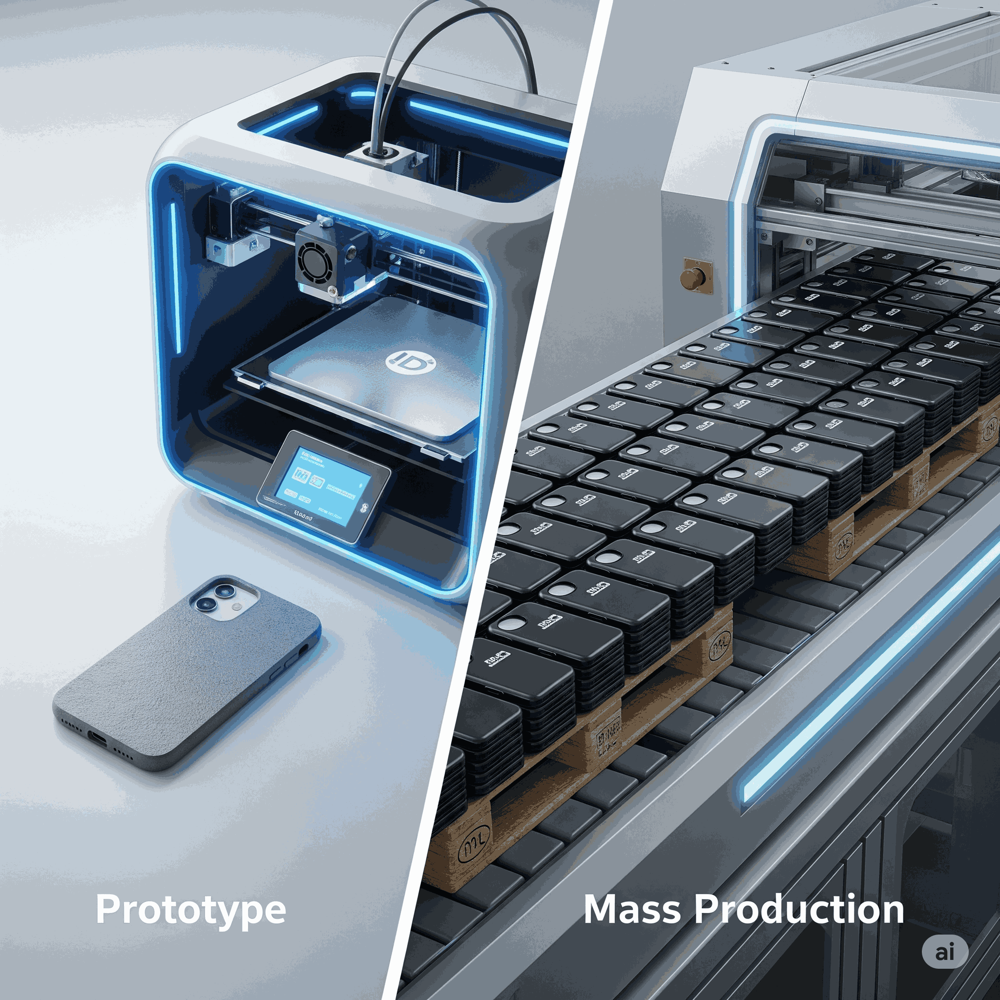
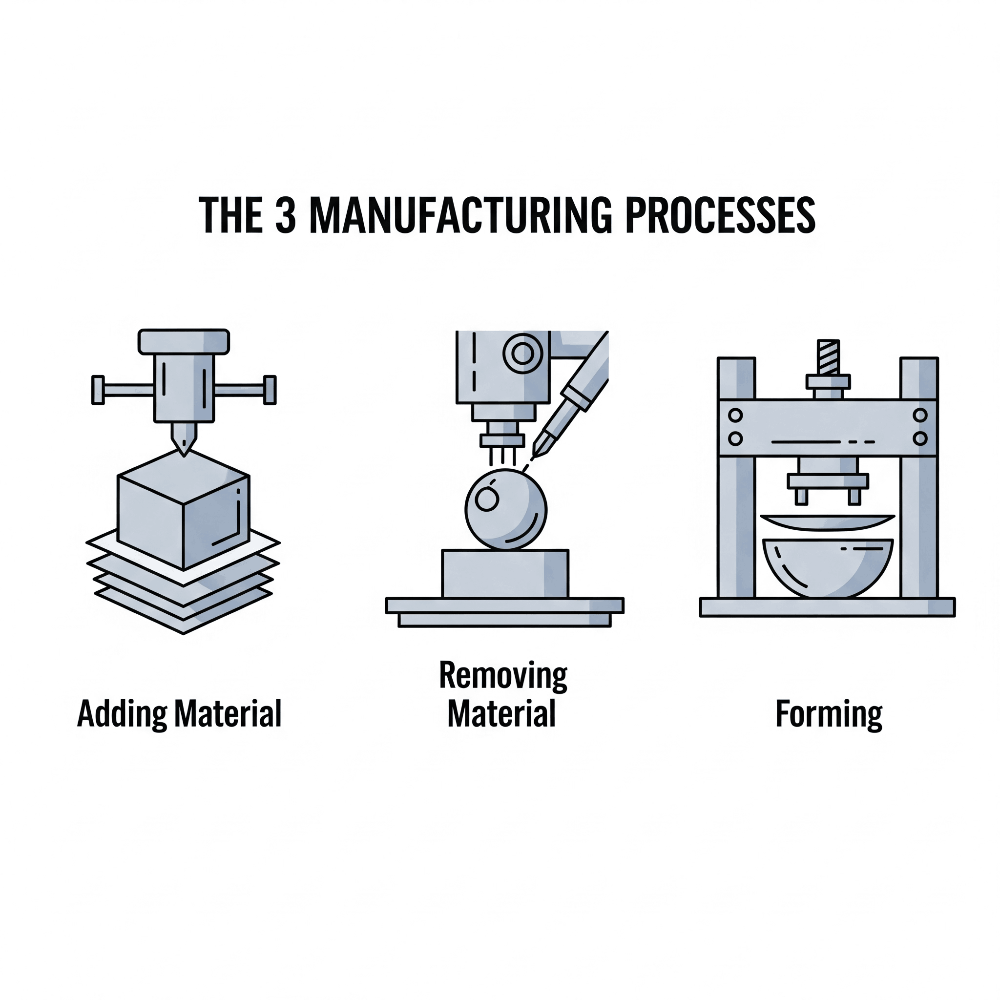
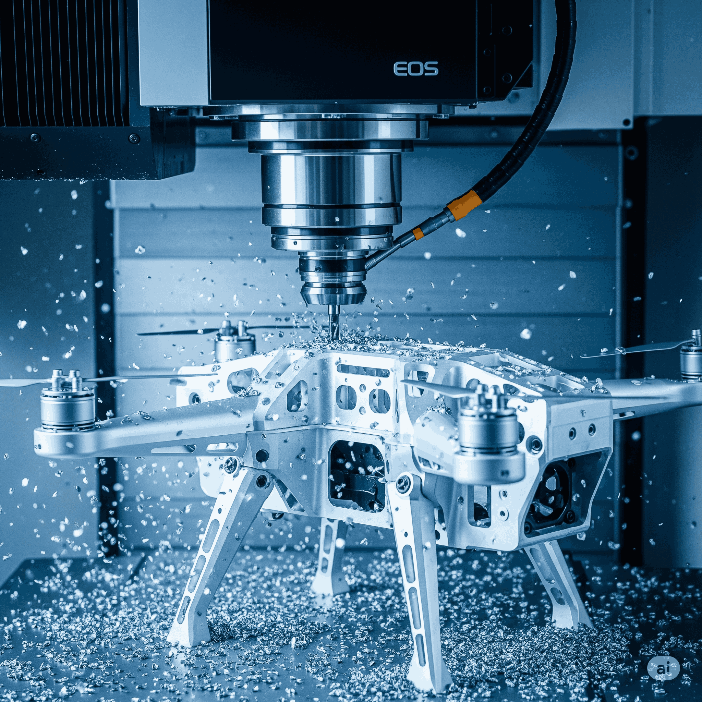

Situation Déclenchante
Léa vient de recevoir une imprimante 3D pour son anniversaire. Passionnée de design, elle passe le week-end à modéliser et à imprimer une coque de téléphone unique pour son smartphone. Elle est fière du résultat : une pièce sur-mesure, exactement comme elle l'imaginait !
En la montrant à ses amis, elle se pose une question : "C'est super de pouvoir fabriquer une seule coque comme ça. Mais comment font les grandes marques comme Apple ou Samsung pour produire des millions de coques, toutes parfaitement identiques, solides et lisses, en si peu de temps ? Mon imprimante 3D mettrait des siècles !"
Cette question est le point de départ de notre enquête. Nous allons passer des coulisses de l'atelier de Léa aux gigantesques usines qui fabriquent nos objets du quotidien. Prépare-toi à découvrir les secrets de l'industrialisation !
Ta mission, si tu l'acceptes...
À la fin de cette séquence, tu seras un véritable expert des procédés de fabrication. Voici tes objectifs :
Compétences à maîtriser :
- Différencier le prototypage (faire une pièce unique) de la production en série (faire des milliers de pièces).
- Identifier les principaux procédés de fabrication (usinage, moulage, injection, impression 3D).
- Choisir le procédé le plus adapté en fonction du matériau, de la forme de la pièce et du nombre de pièces à produire.
Savoirs et connaissances à acquérir :
- Prototypage rapide
- Industrialisation
- Procédés de fabrication (par ajout de matière, par enlèvement de matière, par formage)
- Commande numérique (CNC)
Introduction et Problématique
De la première idée qui germe dans l'esprit d'un ingénieur à l'objet que tu tiens entre tes mains, il y a un monde. Un monde de tests, d'essais, d'améliorations et, surtout, de choix techniques cruciaux. L'aventure de Léa avec sa coque de téléphone illustre parfaitement la première étape : le prototype, un exemplaire unique pour valider une idée.
Mais pour qu'un produit comme une trottinette électrique, un drone de loisir ou une enceinte Bluetooth soit accessible à tous, il faut changer d'échelle. On ne peut pas les imprimer en 3D un par un. Il faut passer à l'industrialisation, c'est-à-dire organiser la production pour fabriquer des milliers, voire des millions d'exemplaires, de manière rapide, économique et avec une qualité constante.
Cela nous amène à notre problématique centrale :
Pour y répondre, nous explorerons d'abord ce qui différencie un prototype d'un produit de série. Ensuite, nous plongerons au cœur des usines pour découvrir les trois grandes familles de fabrication, et enfin, nous verrons comment les machines à commande numérique ont révolutionné l'industrie.
Exploration en Profondeur
1. Prototypage Rapide
a) 🎓 Définition Académique et Enjeux : Le prototypage rapide est un ensemble de techniques permettant de fabriquer rapidement un modèle physique à partir de données de Conception Assistée par Ordinateur (CAO). L'enjeu est de pouvoir tester, valider et itérer sur un concept (forme, ergonomie, assemblage) à faible coût et dans des délais très courts, avant de lancer des investissements lourds pour la production en série.
b) 🧠 Analogie et Simplification Pédagogique : Imagine que tu écris une rédaction. Le brouillon, c'est ton prototype. Tu peux le raturer, le corriger, changer des paragraphes facilement. Une fois que tu es satisfait, tu le recopies au propre pour le rendre au professeur. Le prototypage, c'est le "brouillon" d'un objet technique.
c) 📱 Étude de Cas Concrète : Avant de lancer un nouveau modèle de drone, les ingénieurs impriment en 3D des dizaines de versions du châssis. Ils testent la résistance, l'aérodynamisme, l'emplacement des moteurs et de la batterie. Chaque prototype imprimé en quelques heures permet de corriger un défaut, jusqu'à obtenir le design final parfait.
d) 🛠️ Décortiquage Technique - "Sous le Capot" : Pour créer le prototype de la coque de son smartphone, Léa a suivi ces étapes : 1. Modélisation 3D sur un logiciel de CAO (ex: Tinkercad, Fusion 360). 2. Exportation du fichier au format STL. 3. "Tranchage" du fichier STL dans un logiciel (slicer) qui le découpe en fines couches et génère le G-code (les instructions pour l'imprimante). 4. Envoi du G-code à l'imprimante 3D qui dépose le plastique fondu couche par couche pour construire l'objet.
e) 🤔 Points de Vigilance et Erreurs à Éviter : 1. Confondre prototype et produit fini : Un prototype n'a souvent pas la même solidité ni la même finition qu'un produit de série. Il sert à valider une forme, pas forcément à être utilisé intensivement. 2. Penser que l'impression 3D est la seule technique de prototypage : L'usinage ou la découpe laser sont aussi très utilisés pour prototyper.
f) 💡 Le Saviez-Vous ? La première technique de prototypage rapide, la stéréolithographie, a été inventée en 1984 par le Français Alain Le Méhauté (et deux autres confrères), juste avant l'Américain Chuck Hull qui est plus souvent crédité pour son invention car il a déposé le brevet quelques semaines avant.
g) 🤝 Ponts Interdisciplinaires : Arts Plastiques : Le prototypage rapide est une forme de sculpture numérique. Mathématiques : La modélisation 3D repose entièrement sur la géométrie dans l'espace (coordonnées x, y, z).
h) 🚀 Pour les Experts : On parle de plus en plus de "prototypage fonctionnel". L'objectif n'est plus seulement de valider une forme, mais aussi une fonction. On utilise des matériaux plus résistants (comme le PETG ou l'ABS en impression 3D) pour créer des prototypes qui peuvent être réellement testés en conditions quasi-réelles (par exemple, un engrenage pour un mécanisme).
2. Industrialisation
a) 🎓 Définition Académique et Enjeux : L'industrialisation est le processus qui consiste à passer d'un prototype validé à une production en grande série. Cela implique de concevoir les outils de production (moules, machines spécifiques), d'optimiser les procédés de fabrication, de définir les chaînes d'assemblage et de mettre en place le contrôle qualité. L'enjeu est de produire en grande quantité, au meilleur coût, dans les délais impartis et avec un niveau de qualité constant.
b) 🧠 Analogie et Simplification Pédagogique : Reprenons la rédaction. L'industrialisation, c'est comme si, au lieu de recopier ton texte à la main, tu devais l'imprimer 1000 fois. Tu ne vas pas utiliser ton stylo ! Tu vas utiliser une photocopieuse ou une imprimante. Tu dois t'assurer que la machine a assez d'encre et de papier, qu'elle est bien réglée pour que chaque copie soit parfaite. L'industrialisation, c'est la "photocopieuse" de l'objet technique.
c) 📱 Étude de Cas Concrète : Pour la coque du smartphone, l'industrialisation consiste à créer un moule en acier extrêmement précis, qui coûtera des dizaines de milliers d'euros. Ce moule sera monté sur une presse à injecter qui produira une coque toutes les 10 à 20 secondes. On organisera aussi la logistique pour recevoir les granulés de plastique et expédier les millions de coques produites.
d) 🛠️ Décortiquage Technique - "Sous le Capot" : Les étapes de l'industrialisation pour le châssis en aluminium d'une trottinette électrique : 1. Conception du produit final en pensant à la fabrication (simplifier les formes pour le moulage). 2. Conception et fabrication des moules (outillage). 3. Mise en place de la ligne de production : machines de moulage par injection, robots pour extraire les pièces, postes d'ébavurage (enlever les surplus de matière), postes de contrôle qualité (vérification des dimensions, des défauts).
e) 🤔 Points de Vigilance et Erreurs à Éviter : 1. Penser qu'on peut industrialiser n'importe quel prototype : Parfois, la forme d'un prototype est trop complexe ou impossible à fabriquer en série. Il faut souvent redessiner l'objet pour qu'il soit "industrialisable". 2. Sous-estimer le coût de l'outillage : Le moule d'injection est souvent l'investissement le plus cher dans un projet.
f) 💡 Le Saviez-Vous ? Henry Ford n'a pas inventé l'automobile, mais il a inventé la ligne d'assemblage moderne (le "Fordisme") en 1913. En divisant le montage de la Ford T en 84 étapes simples, il a fait passer le temps d'assemblage d'un châssis de 12 heures à seulement 93 minutes, rendant la voiture accessible au plus grand nombre.
g) 🤝 Ponts Interdisciplinaires : Histoire : La Révolution Industrielle au 19ème siècle est la première grande phase d'industrialisation. Sciences Économiques et Sociales : L'industrialisation a des impacts majeurs sur la société (urbanisation, création d'emplois, consommation de masse).
h) 🚀 Pour les Experts : Un des grands défis de l'industrialisation aujourd'hui est la "mass customization" (personnalisation de masse). Comment concilier les économies d'échelle de la production de masse avec le désir des consommateurs d'avoir un produit unique ? Des techniques comme la fabrication additive ou des lignes de production flexibles sont des pistes explorées.
3. Procédés de Fabrication
Pour fabriquer un objet, on peut suivre trois grandes stratégies. C'est comme faire une sculpture : on peut partir de rien et ajouter de l'argile, prendre un bloc de bois et en enlever des copeaux, ou prendre une feuille de métal et la plier.
a) Fabrication par Ajout de Matière (Fabrication Additive)
🎓 Définition : On construit la pièce en ajoutant de la matière couche par couche. C'est le principe de l'impression 3D.
🧠 Analogie : C'est comme construire un château de LEGO, brique par brique.
📱 Étude de Cas : Le prototypage de la coque de smartphone de Léa. C'est aussi utilisé pour créer des pièces très complexes et légères pour les drones de compétition.
💡 Le Saviez-Vous ? On arrive aujourd'hui à imprimer en 3D du métal, du béton (pour des maisons !) et même des tissus biologiques (bio-impression).
b) Fabrication par Enlèvement de Matière (Usinage)
🎓 Définition : On part d'un bloc de matière brute (un "brut") et on enlève de la matière (des "copeaux") à l'aide d'un outil coupant pour obtenir la forme désirée.
🧠 Analogie : C'est comme un sculpteur qui taille une statue dans un bloc de marbre.
📱 Étude de Cas : La fabrication du cadre en aluminium de certains smartphones haut de gamme ou des pièces métalliques de précision pour le moteur d'une trottinette électrique. Le perçage, le fraisage, le tournage sont des techniques d'usinage.
💡 Le Saviez-Vous ? Les copeaux de métal issus de l'usinage sont presque toujours recyclés, ce qui en fait un procédé avec peu de perte de matière nette.
c) Fabrication par Formage
🎓 Définition : On déforme une matière (souvent chauffée pour la ramollir) pour lui donner la forme souhaitée, sans ajouter ni enlever de matière.
🧠 Analogie : C'est comme un potier qui modèle une boule d'argile sur son tour, ou comme prendre une feuille de papier et la plier pour en faire un avion.
📱 Étude de Cas : Le moulage par injection plastique est la technique de formage la plus courante. On l'utilise pour fabriquer les coques des enceintes Bluetooth, les hélices des drones, et la plupart des objets en plastique qui nous entourent. Le pliage de tôle (pour les cadres de trottinettes) est aussi un procédé de formage.
4. Commande Numérique (CNC)
a) 🎓 Définition Académique et Enjeux : La Commande Numérique par Calculateur (CNC, pour Computer Numerical Control) est une technologie qui permet de piloter des machines-outils par un ordinateur. À partir d'un fichier de CAO, l'ordinateur envoie des instructions (le G-code) pour commander les mouvements des outils avec une très grande précision. L'enjeu est d'automatiser la production, de garantir une répétabilité parfaite et de réaliser des formes très complexes impossibles à faire manuellement.
b) 🧠 Analogie et Simplification Pédagogique : Imagine un dessinateur ultra-précis qui peut suivre des instructions à la lettre. Tu lui donnes les coordonnées de points, et il trace les lignes parfaitement, sans jamais trembler, et peut recommencer le même dessin 1000 fois à l'identique. La CNC, c'est ce dessinateur robotisé pour les machines.
c) 📱 Étude de Cas Concrète : Les machines qui usinent les cadres en aluminium des smartphones sont des fraiseuses CNC. L'outil, tournant à très grande vitesse, se déplace sur 3, 4 ou même 5 axes pour "sculpter" le bloc d'aluminium et créer les courbes complexes, les trous pour les boutons et les ouvertures pour les connecteurs, avec une précision de l'ordre du centième de millimètre.
d) 🛠️ Décortiquage Technique - "Sous le Capot" : Le processus CNC : 1. Conception de la pièce sur un logiciel de CAO. 2. Création du parcours d'outil dans un logiciel de FAO (Fabrication Assistée par Ordinateur). Ce logiciel simule l'usinage et génère le G-code. 3. Le G-code est un fichier texte avec des commandes comme `G01 X10 Y25 F200` qui signifie "va en ligne droite au point de coordonnées X=10mm, Y=25mm à une vitesse de 200 mm/minute". 4. L'opérateur installe le bloc de matière (le "brut") dans la machine, charge le G-code, et lance l'usinage. La machine exécute le programme de manière autonome.
e) 🤔 Points de Vigilance et Erreurs à Éviter : 1. Penser que CNC = Usinage : C'est faux ! La commande numérique pilote toutes sortes de machines : des fraiseuses (usinage), mais aussi des découpeuses laser, des presses plieuses, et même des imprimantes 3D ! C'est le "cerveau" de la machine. 2. Oublier le rôle de l'opérateur : Même si la machine est autonome, un technicien qualifié est indispensable pour la préparer, la surveiller et s'assurer que tout se passe bien.
f) 💡 Le Saviez-Vous ? Les premières machines à commande numérique datent des années 1950 et fonctionnaient avec des rubans perforés, comme les orgues de barbarie ! L'ordinateur a remplacé ce système, rendant la technologie beaucoup plus flexible.
g) 🤝 Ponts Interdisciplinaires : Mathématiques : Le G-code est une application directe de la géométrie analytique et des vecteurs pour décrire les mouvements dans l'espace. Physique/Chimie : Le choix des vitesses de coupe et des outils dépend des propriétés du matériau à usiner (dureté, point de fusion...).
h) 🚀 Pour les Experts : Les machines CNC les plus avancées ont 5 axes. En plus des 3 axes linéaires (X, Y, Z), la pièce ou l'outil peut pivoter selon deux axes de rotation. Cela permet d'usiner des formes extrêmement complexes, comme des hélices de bateau ou des turbines de réacteur, en une seule opération, sans avoir à démonter et repositionner la pièce.
De l'Idée au Produit : La Chronologie
Étape 1 : L'Idée & la CAO
Tout commence par une idée, qui est ensuite transformée en un modèle 3D détaillé à l'aide d'un logiciel de Conception Assistée par Ordinateur (CAO).
Étape 2 : Le Prototypage
On fabrique un ou plusieurs exemplaires de test, souvent par impression 3D, pour valider la forme, l'ergonomie et l'assemblage. C'est une phase d'essais et d'erreurs rapides.
Étape 3 : L'Industrialisation
Une fois le prototype validé, on prépare la production en série : conception des moules, choix des machines, mise en place de la chaîne de production. C'est une étape coûteuse et complexe.
Étape 4 : La Production en Série
Les machines tournent à plein régime pour fabriquer des milliers ou millions de pièces identiques, en utilisant des procédés optimisés comme le moulage par injection.
Concepts en Duel : Cartes à Retourner
Clique sur les cartes pour découvrir la différence entre ces concepts clés !
Avenir et Perspectives : L'Usine du Futur
La façon dont nous fabriquons les objets est en pleine révolution. L'usine de demain, souvent appelée "Industrie 4.0", sera intelligente, connectée et plus respectueuse de l'environnement.
- Fabrication Hybride : On combinera les procédés. Une machine pourra par exemple imprimer en 3D une pièce en métal (ajout) puis en usiner les surfaces de précision (enlèvement) dans la même opération.
- Intelligence Artificielle (IA) : L'IA optimisera les lignes de production en temps réel, anticipera les pannes des machines (maintenance prédictive) et contrôlera la qualité des produits avec une efficacité redoutable.
- Fabrication Locale : Grâce à des machines plus compactes et polyvalentes comme les imprimantes 3D, on pourra relocaliser une partie de la production au plus près des consommateurs, pour créer des produits sur-mesure et réduire l'impact des transports.
- Défis Écologiques : Le plus grand défi sera de produire mieux avec moins. Cela passe par l'utilisation de matériaux recyclés ou biosourcés, la réduction de la consommation d'énergie des usines et la conception d'objets plus faciles à réparer et à recycler (écoconception).
Conclusion
Nous avons commencé avec la simple question de Léa : comment passe-t-on d'une coque de téléphone à des millions ? Nous avons maintenant la réponse. Ce passage du prototype à la série n'est pas magique, c'est le fruit d'une démarche rigoureuse : l'industrialisation.
Nous avons vu que le choix du procédé de fabrication est un compromis stratégique. L'impression 3D (ajout de matière) est reine pour le prototypage rapide et les petites séries complexes. Pour la très grande série, le moulage par injection (formage) est imbattable en coût et en vitesse, malgré un investissement initial élevé. Et pour les pièces de haute précision, l'usinage (enlèvement de matière), souvent piloté par commande numérique (CNC), reste indispensable.
En comprenant ces principes, tu ne regarderas plus jamais un smartphone, une trottinette ou un drone de la même façon. Tu y verras les traces de ces choix techniques qui façonnent notre monde matériel.
Pour Tester tes Connaissances : Exercices Interactifs
Question 1 (QCM)
Pour fabriquer 2 millions de coques en plastique pour une enceinte Bluetooth, quel procédé est le plus adapté et pourquoi ?
Question 2 (Vrai / Faux)
"L'impression 3D est toujours le meilleur procédé pour fabriquer 1 million de pièces identiques."
Question 3 (Question Ouverte)
Expliquez avec vos propres mots pourquoi une entreprise ne fabrique pas les prototypes d'un drone avec la même technique que les modèles de série. Mentionnez au moins deux critères de choix.
Indice : Pensez aux objectifs différents de chaque phase. L'un est lié au test et à la vitesse de modification, l'autre à la production en masse. Quels sont les impacts sur le coût et le temps ?
Réponse type : Une entreprise utilise des techniques différentes car les objectifs ne sont pas les mêmes. Pour le prototypage, l'objectif est de tester rapidement des idées à faible coût. L'impression 3D est idéale car elle est flexible et ne nécessite pas d'outillage cher. Pour la production en série, l'objectif est de produire des milliers de pièces identiques au coût le plus bas possible. Le moulage par injection est alors plus adapté car, même si le moule est cher au départ, le coût par pièce devient très faible et la vitesse de production est très élevée. Les deux critères principaux sont donc le **coût** (investissement initial vs coût par pièce) et la **quantité/vitesse** de production.
Question 4 (QCM)
Qu'est-ce que la Commande Numérique (CNC) ?
Question 5 (Vrai / Faux)
"Un prototype doit toujours être parfaitement fonctionnel et avoir la même finition que le produit final."
Question 6 (Question Ouverte)
Décrivez les trois grandes familles de procédés de fabrication et donnez un exemple concret pour chacune, tiré du cours.
Indice : Pensez à une sculpture : on peut ajouter de la matière, en enlever, ou la déformer.
Réponse type :
1. Ajout de matière : On construit la pièce couche par couche. Exemple : l'impression 3D de la coque de smartphone de Léa.
2. Enlèvement de matière : On part d'un bloc et on enlève des copeaux. Exemple : l'usinage du cadre en aluminium d'un smartphone.
3. Formage : On déforme la matière pour lui donner sa forme. Exemple : le moulage par injection des hélices d'un drone.
Synthèse Visuelle
- Du Prototype à la Série
- 1. Le Prototype
- Objectif : Tester, valider une idée
- Caractéristiques : Pièce unique, rapide à faire, faible coût
- Technique phare : Prototypage Rapide (ex: Impression 3D)
- 2. La Série
- Objectif : Produire en masse
- Démarche : Industrialisation
- Contraintes : Coût, qualité, délais
- 3. Les Procédés de Fabrication
- Ajout de matière : Impression 3D (prototypes, pièces complexes)
- Enlèvement de matière : Usinage (pièces précises, métal)
- Formage : Moulage, pliage (grande série, plastique, métal)
- 4. Le Cerveau des Machines
- Commande Numérique (CNC) : Automatisation, précision, répétabilité
- Langage : G-code
- 1. Le Prototype
Lexique
- CAO (Conception Assistée par Ordinateur)
- Utilisation de logiciels pour créer et modifier des objets en 2D ou 3D. C'est le plan numérique de l'objet.
- CNC (Commande Numérique par Calculateur)
- Système informatique qui pilote les mouvements d'une machine-outil à partir d'un programme.
- G-code
- Le langage de programmation qui donne les instructions de mouvement à une machine à commande numérique.
- Industrialisation
- Ensemble des étapes permettant de passer d'un prototype à une production en grande série.
- Moulage par injection
- Procédé de formage où du plastique fondu est injecté sous haute pression dans un moule pour former une pièce.
- Prototypage rapide
- Ensemble de techniques (dont l'impression 3D) pour fabriquer très vite un modèle physique d'un objet conçu en CAO.
- Usinage
- Procédé de fabrication par enlèvement de matière (copeaux) à partir d'un bloc brut.
Pour Aller Plus Loin
Mini-Projet : Deviens Designer !
Utilise un logiciel de CAO simple et gratuit comme Tinkercad pour modéliser un objet simple lié à tes passions : un porte-clés, un support pour smartphone, un pion pour un jeu de société... Si tu as accès à une imprimante 3D au collège, fabrique ton prototype !
Vidéo de Référence : "C'est Pas Sorcier - Les PLASTIQUES"
Même si elle a quelques années, cette vidéo reste une référence géniale pour comprendre d'où vient le plastique et comment on le transforme, notamment avec le moulage par injection. Tu la trouveras facilement sur YouTube.
Métier à Découvrir : Technicien d'Usinage sur Machine à Commande Numérique
C'est la personne qui programme, règle et supervise les machines CNC. C'est un métier de haute précision qui mêle compétences informatiques et savoir-faire mécanique, très recherché dans l'aéronautique, l'automobile ou le médical.